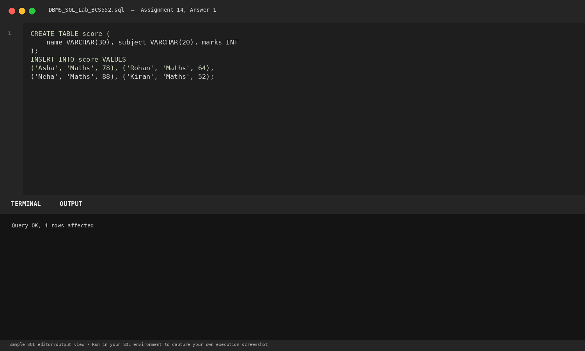
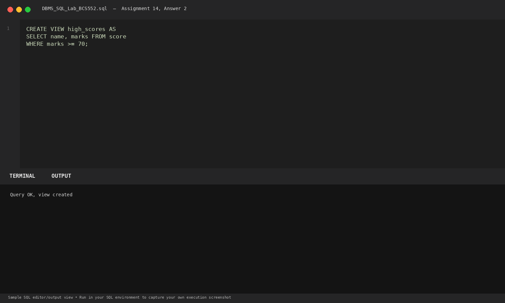
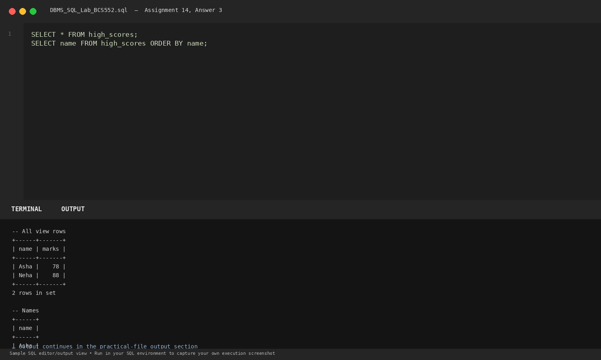

Task 1
Set up the score table
SQL Query
CREATE TABLE score (
name VARCHAR(30), subject VARCHAR(20), marks INT
);
INSERT INTO score VALUES
('Asha', 'Maths', 78), ('Rohan', 'Maths', 64),
('Neha', 'Maths', 88), ('Kiran', 'Maths', 52);Database Output
Query OK, 4 rows affected
Explanation: Creates a score table recording subject test marks.
Terminal Screenshot Preview

Task 2
Create the high_scores view
SQL Query
CREATE VIEW high_scores AS
SELECT name, marks FROM score
WHERE marks >= 70;Database Output
Query OK, view created
Explanation: Creates a virtual view high_scores containing students scoring 70 or above.
Terminal Screenshot Preview

Task 3
Display all rows and names from the view
SQL Query
SELECT * FROM high_scores;
SELECT name FROM high_scores ORDER BY name;Database Output
-- All view rows +------+-------+ | name | marks | +------+-------+ | Asha | 78 | | Neha | 88 | +------+-------+ 2 rows in set -- Names +------+ | name | +------+ | Asha | | Neha | +------+ 2 rows in set
Explanation: Queries high_scores like a normal table. The database engine transparently resolves the view definition at runtime.
Terminal Screenshot Preview
